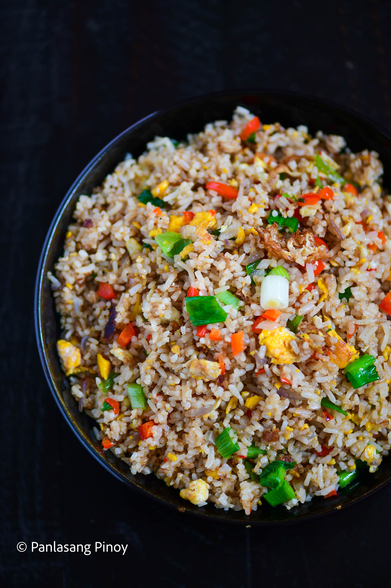

Egg Fried Rice

Description
Egg fried rice has Chinese origins; like the Philippines, China has a bunch of different fried rice recipes of its own. This variant of fried rice may be one of, if not the most basic. However, what it lacks in grandeur it makes up for in its colorful appearance, inviting smell—and phenomenal taste! If you’re looking for a timeless yet creative way to spin your leftover rice, this dish is truly the way to go.
Ingredients
- 4 eggs
- 4 cups leftover rice
- 1 onion chopped
- 1/2 bell pepper chopped
- 3 sweet peppers chopped
- 2 tablespoons soy sauce
- 1 teaspoon sesame oil
- 3/4 cup green onion chopped
- 1/4 teaspoon salt
- 1/2 teaspoon sugar optional
- 4 tablespoons cooking oil
Steps
- Crack the eggs and place in a bowl.
- Heat oil in a wok. Once the oil gets hot, pour the eggs into the wok. Cook until the bottom part turns brown and somewhat crispy. Turn the eggs over and do the same to the other side.
- Add the peppers and onion. Sauté the ingredients for 1 minute while breaking the eggs apart.
- Add half of the leftover rice. Stir fry for 2 minutes.
- Add the remaining rice. Continue cooking until all the ingredients are well blended.
- Pour the sesame oil and soy sauce. Continue stir frying for 2 minutes.
- Season with salt and sugar and add the green onions. Toss until well blended.
- Transfer to a serving plate. Serve with your favorite main dish.
- Share and enjoy!